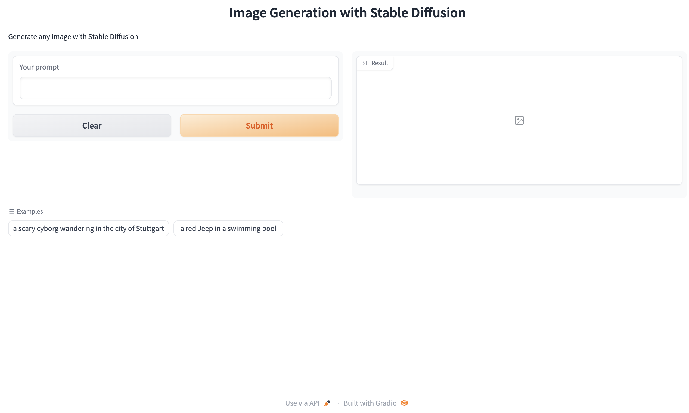
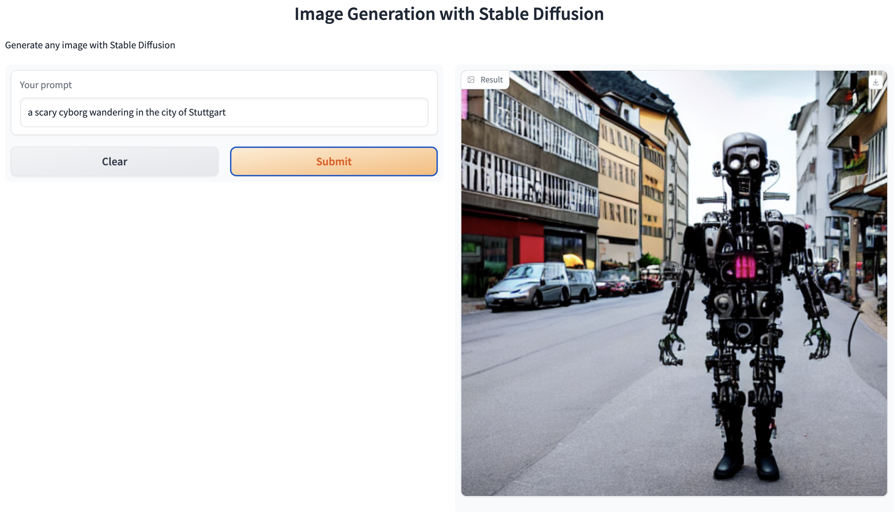
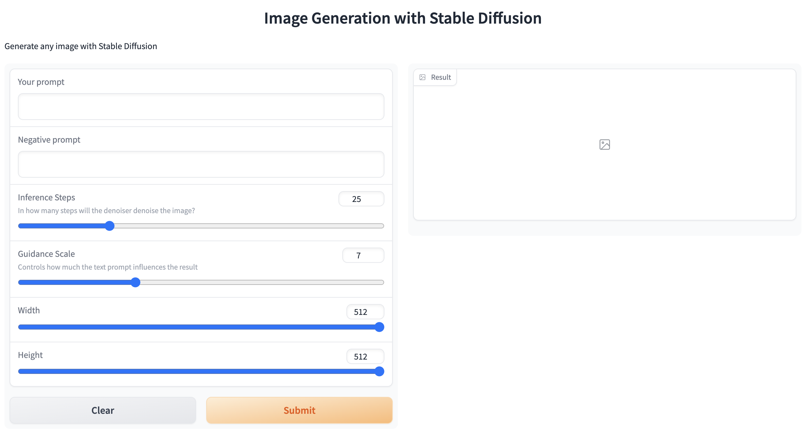
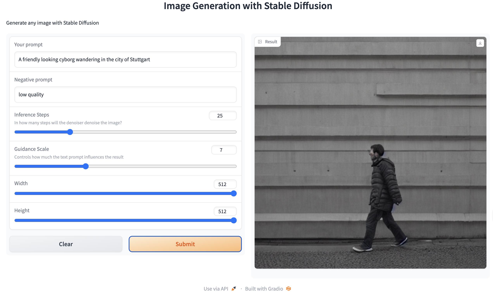
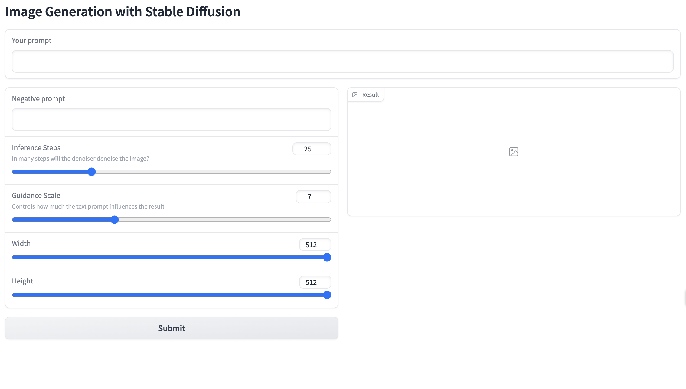

import os
import io
import IPython.display
from PIL import Image
import base64
import gradio as gr
import json
from diffusers import DiffusionPipeline
from dotenv import load_dotenv, find_dotenv
_ = load_dotenv(find_dotenv()) # read local .env file
hf_api_key = os.environ['HF_API_KEY']Image Generation App
Setup
Python
Load your HF API key and relevant Python libraries
Load model (only Apple Silicon)
- In this example, we demonstrate how to use Stable Diffusion in Apple Silicon (M1/M2).
- You’ll find the Windows and Apple Intel version below
# Apple Silicon version
pipe = DiffusionPipeline.from_pretrained("runwayml/stable-diffusion-v1-5")
pipe = pipe.to("mps")
# Recommended if your computer has < 64 GB of RAM
pipe.enable_attention_slicing()
def get_completion(prompt):
return pipe(prompt).images[0]Load Model (only Apple Intel and Windows)
pipe = DiffusionPipeline.from_pretrained("runwayml/stable-diffusion-v1-5")
def get_completion(prompt):
return pipe(prompt).images[0]Optional: API-version
- Only use this code if you want to use the API
# Helper function
import requests, json
#Text-to-image endpoint
def get_completion(inputs, parameters=None, ENDPOINT_URL=os.environ['HF_API_TTI_BASE']):
headers = {
"Authorization": f"Bearer {hf_api_key}",
"Content-Type": "application/json"
}
data = { "inputs": inputs }
if parameters is not None:
data.update({"parameters": parameters})
response = requests.request("POST",
ENDPOINT_URL,
headers=headers,
data=json.dumps(data))
return json.loads(response.content.decode("utf-8"))Image Generation App
Building an image generation app
Example prompt
- Here we are going to run
runwayml/stable-diffusion-v1-5using the🧨 diffuserslibrary.
prompt = "a dog in a park"Result
result = get_completion(prompt)
result
Generating with gr.Interface()
def generate(inputs):
output = get_completion(inputs)
return output
gr.close_all()
demo = gr.Interface(fn=generate,
inputs=[gr.Textbox(label="Your prompt")],
outputs=[gr.Image(label="Result")],
title="Image Generation with Stable Diffusion",
description="Generate any image with Stable Diffusion",
allow_flagging="never",
examples=[
"a scary cyborg wandering in the city of Stuttgart", "a red Jeep in a swimming pool"]
)
demo.launch(share=True)Gradio user interface

Output

Optional: API-Version
import gradio as gr
#A helper function to convert the PIL image to base64
#so you can send it to the API
def base64_to_pil(img_base64):
base64_decoded = base64.b64decode(img_base64)
byte_stream = io.BytesIO(base64_decoded)
pil_image = Image.open(byte_stream)
return pil_image
def generate(prompt):
output = get_completion(prompt)
result_image = base64_to_pil(output)
return result_image
gr.close_all()
demo = gr.Interface(fn=generate,
inputs=[gr.Textbox(label="Your prompt")],
outputs=[gr.Image(label="Result")],
title="Image Generation with Stable Diffusion",
description="Generate any image with Stable Diffusion",
allow_flagging="never",
examples=["the spirit of a tamagotchi wandering in the city of Vienna","a mecha robot in a favela"])
demo.launch(share=True, server_port=int(os.environ['PORT1']))Close apps
demo.close()Advanced User Interface
Building a more advanced interface
Gradio app
Note: The following code for the local app mimics the code of the API-version as close as possible.
def get_completion(inputs, parameters=None):
data = {"inputs": inputs}
if parameters is not None:
data.update({"parameters": parameters})
response = json.dumps(data)
return pipe(response).images[0]
def generate(prompt, negative_prompt, steps, guidance, width, height):
params = {
"negative_prompt": negative_prompt,
"num_inference_steps": steps,
"guidance_scale": guidance,
"width": width,
"height": height
}
output = get_completion(prompt, params)
return output
gr.close_all()
demo = gr.Interface(fn=generate,
inputs=[
gr.Textbox(label="Your prompt"),
gr.Textbox(label="Negative prompt"),
gr.Slider(label="Inference Steps", minimum=1, maximum=100, value=25,
info="In how many steps will the denoiser denoise the image?"),
gr.Slider(label="Guidance Scale", minimum=1, maximum=20, value=7,
info="Controls how much the text prompt influences the result"),
gr.Slider(label="Width", minimum=64,
maximum=512, step=64, value=512),
gr.Slider(label="Height", minimum=64,
maximum=512, step=64, value=512),
],
outputs=[gr.Image(label="Result")],
title="Image Generation with Stable Diffusion",
description="Generate any image with Stable Diffusion",
allow_flagging="never"
)
demo.launch(share=True)Gradio user interface

Model output

🤔
Optional: API-version
#A helper function to convert the PIL image to base64
# so you can send it to the API
def base64_to_pil(img_base64):
base64_decoded = base64.b64decode(img_base64)
byte_stream = io.BytesIO(base64_decoded)
pil_image = Image.open(byte_stream)
return pil_image
def generate(prompt, negative_prompt, steps, guidance, width, height):
params = {
"negative_prompt": negative_prompt,
"num_inference_steps": steps,
"guidance_scale": guidance,
"width": width,
"height": height
}
output = get_completion(prompt, params)
pil_image = base64_to_pil(output)
return pil_image
gr.close_all()
demo = gr.Interface(fn=generate,
inputs=[
gr.Textbox(label="Your prompt"),
gr.Textbox(label="Negative prompt"),
gr.Slider(label="Inference Steps", minimum=1, maximum=100, value=25,
info="In how many steps will the denoiser denoise the image?"),
gr.Slider(label="Guidance Scale", minimum=1, maximum=20, value=7,
info="Controls how much the text prompt influences the result"),
gr.Slider(label="Width", minimum=64, maximum=512, step=64, value=512),
gr.Slider(label="Height", minimum=64, maximum=512, step=64, value=512),
],
outputs=[gr.Image(label="Result")],
title="Image Generation with Stable Diffusion",
description="Generate any image with Stable Diffusion",
allow_flagging="never"
)
demo.launch(share=True, server_port=int(os.environ['PORT2']))Close apps
demo.close()Gradio Blocks
Gradio example with Blocks
with gr.Blocks() as demo:
gr.Markdown("# Image Generation with Stable Diffusion")
prompt = gr.Textbox(label="Your prompt")
with gr.Row():
with gr.Column():
negative_prompt = gr.Textbox(label="Negative prompt")
steps = gr.Slider(label="Inference Steps", minimum=1, maximum=100, value=25,
info="In many steps will the denoiser denoise the image?")
guidance = gr.Slider(label="Guidance Scale", minimum=1, maximum=20, value=7,
info="Controls how much the text prompt influences the result")
width = gr.Slider(label="Width", minimum=64,
maximum=512, step=64, value=512)
height = gr.Slider(label="Height", minimum=64,
maximum=512, step=64, value=512)
btn = gr.Button("Submit")
with gr.Column():
output = gr.Image(label="Result")
btn.click(fn=generate, inputs=[
prompt, negative_prompt, steps, guidance, width, height], outputs=[output])
gr.close_all()
demo.launch(share=True)Gradio user interface

Optional: API Version
with gr.Blocks() as demo:
gr.Markdown("# Image Generation with Stable Diffusion")
prompt = gr.Textbox(label="Your prompt")
with gr.Row():
with gr.Column():
negative_prompt = gr.Textbox(label="Negative prompt")
steps = gr.Slider(label="Inference Steps", minimum=1, maximum=100, value=25,
info="In many steps will the denoiser denoise the image?")
guidance = gr.Slider(label="Guidance Scale", minimum=1, maximum=20, value=7,
info="Controls how much the text prompt influences the result")
width = gr.Slider(label="Width", minimum=64, maximum=512, step=64, value=512)
height = gr.Slider(label="Height", minimum=64, maximum=512, step=64, value=512)
btn = gr.Button("Submit")
with gr.Column():
output = gr.Image(label="Result")
btn.click(fn=generate, inputs=[prompt,negative_prompt,steps,guidance,width,height], outputs=[output])
gr.close_all()
demo.launch(share=True, server_port=int(os.environ['PORT3']))
Gradio user interface

Optional: API Version
with gr.Blocks() as demo:
gr.Markdown("# Image Generation with Stable Diffusion")
with gr.Row():
with gr.Column(scale=4):
prompt = gr.Textbox(label="Your prompt") #Give prompt some real estate
with gr.Column(scale=1, min_width=50):
btn = gr.Button("Submit") #Submit button side by side!
with gr.Accordion("Advanced options", open=False): #Let's hide the advanced options!
negative_prompt = gr.Textbox(label="Negative prompt")
with gr.Row():
with gr.Column():
steps = gr.Slider(label="Inference Steps", minimum=1, maximum=100, value=25,
info="In many steps will the denoiser denoise the image?")
guidance = gr.Slider(label="Guidance Scale", minimum=1, maximum=20, value=7,
info="Controls how much the text prompt influences the result")
with gr.Column():
width = gr.Slider(label="Width", minimum=64, maximum=512, step=64, value=512)
height = gr.Slider(label="Height", minimum=64, maximum=512, step=64, value=512)
output = gr.Image(label="Result") #Move the output up too
btn.click(fn=generate, inputs=[prompt,negative_prompt,steps,guidance,width,height], outputs=[output])
gr.close_all()
demo.launch(share=True, server_port=int(os.environ['PORT4']))Close all apps
gr.close_all()